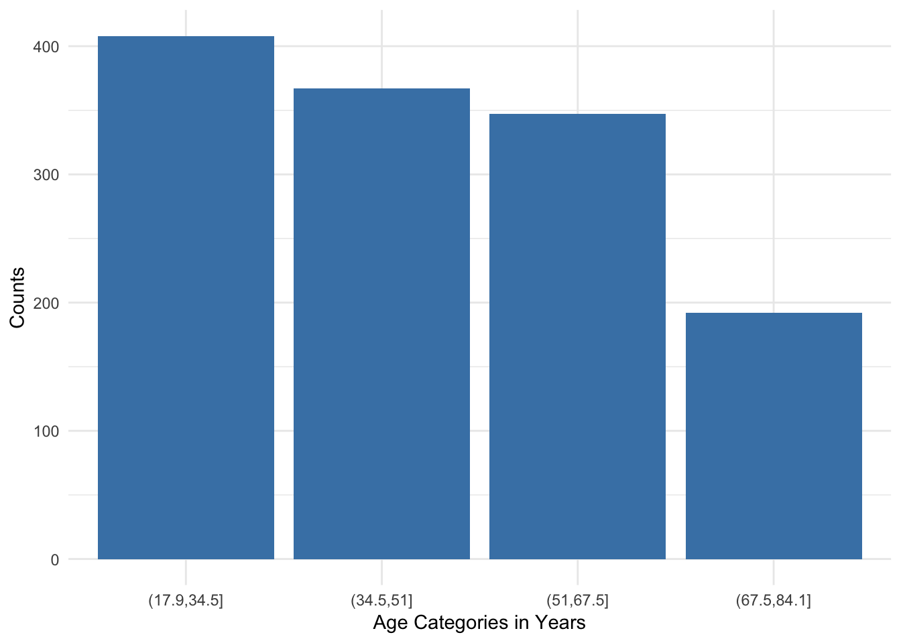
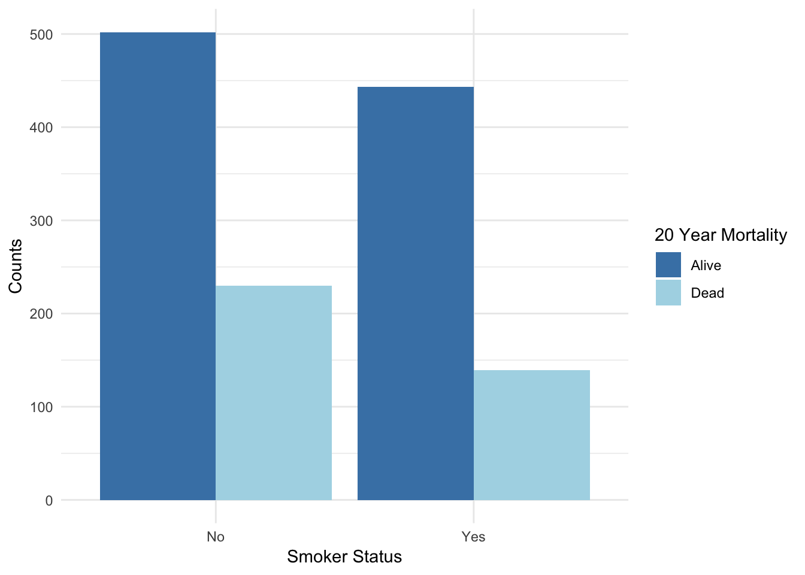
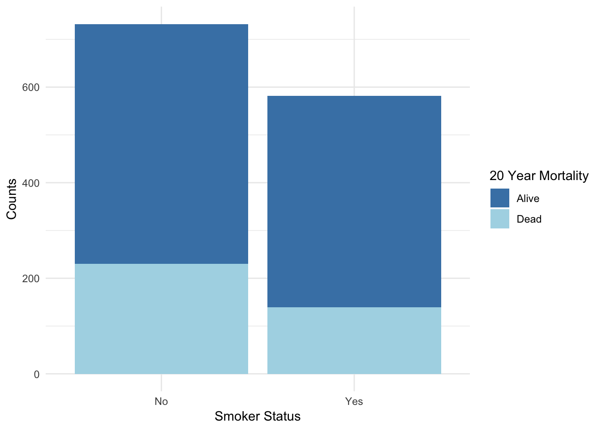
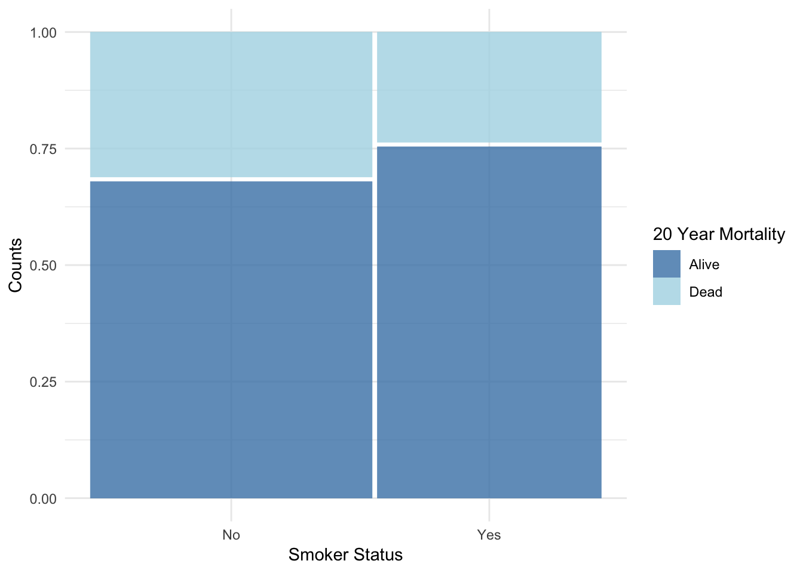
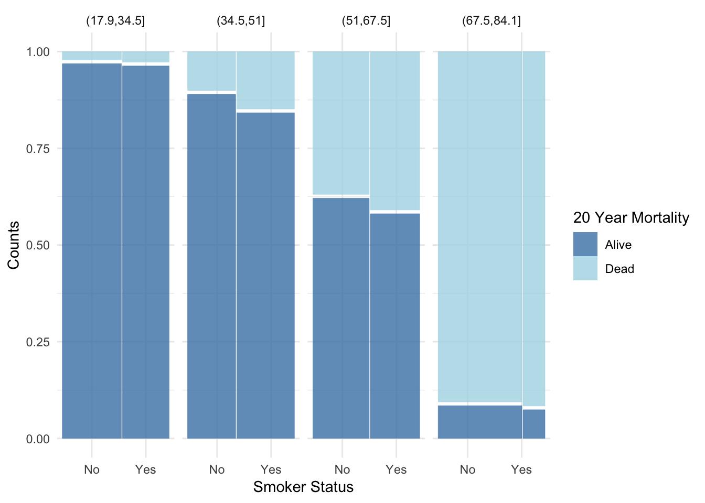
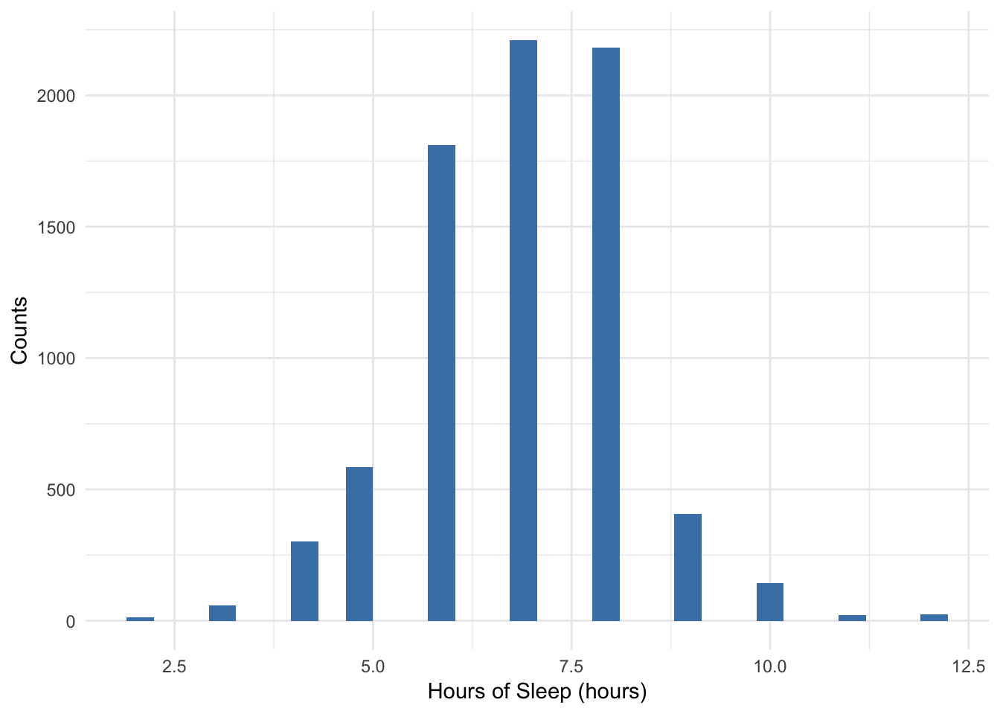
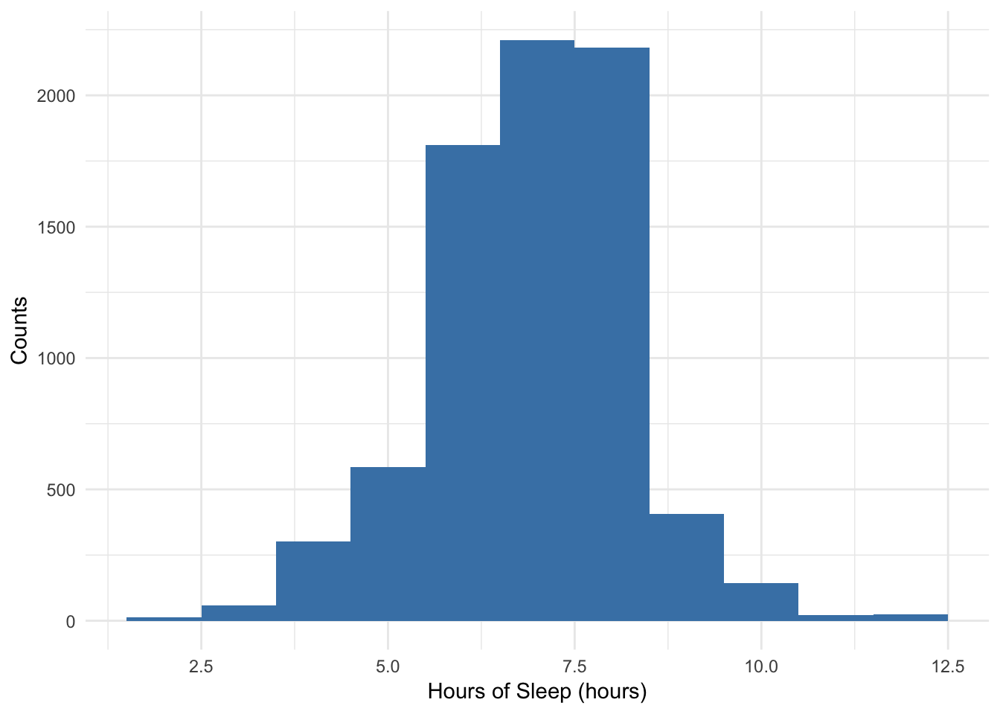
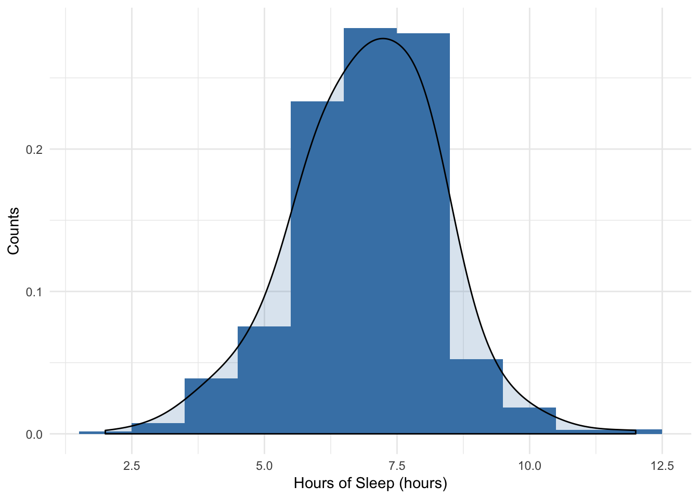
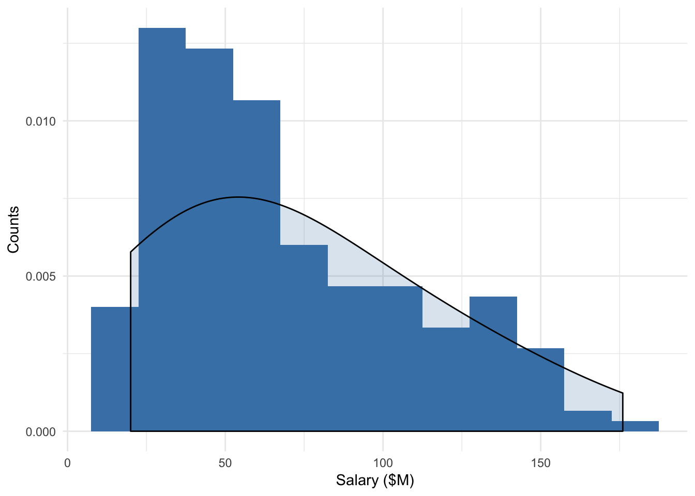

2 Introduction to Data
2.1 Data Collection
For any data set, you should always ask yourself (or others) a few questions to provide vital context.
- Who is in the data set? (What is the observational unit or case? How were they chosen?)
- What is being measured or recorded on each case? (What are the characteristics or variables that were collected?)
- Where were they collected? (One location? Multiple locations?)
- When were they collected? (One point in time? Over time?)
- How were they collected? (Measurements? Questionnaire? By phone? In person?)
- Why were they collected? (Who paid? Conflicts of interest?)
We hope that the cases in the data set represent a population of interest. In particular, we say that our data that has been collected is a sample from a population.
Population of Interest: A collection of people, creatures, things, cases or others that we interested in knowning more about.
Sample: A subset of the population of interest on which we have collected data.
Getting information from everyone individual in a population is very difficult (it is called a census) and in many situations, impossible.
We want to get a sense of the population by just collected data on a subset. Think about making a soup. We want to make sure there is enough (but not too much) salt or seasonings. We don’t need to eat the entire pot of soup to know if there is the right amount. We just need a spoonful from a well-stirred pot of soup so that it is that taste is representative of the whole pot.
Representative Sample:A group that closely matches the characteristics of its population as a whole. In other words, the sample is a fairly accurate reflection of the population from which the sample is drawn.
Sampling Bias: If the sample is unrepresentative of the population of interest in a systematic way, there is sampling bias.
Here are a few flavors of sampling bias:
- Undercoverage: When some members of the population are inadequately represented in the sample due to the sampling procedure (often from convenience samples). An example would be the Literary Digest 1936 poll that got the president election wrong. The survey relied on a convenience sample, drawn from telephone directories and car registration lists. In 1936, people who owned cars and telephones tended to be more affluent.
- Response bias: when the response does not accurately represent the true value for the individual (due to wording of the question or to increase social desirability). Most people like to present themselves in a favorable light, so they will be reluctant to admit to unsavory attitudes or illegal activities in a survey, particularly if survey results are not confidential.
- Nonresponse bias: When individuals chosen or selected for the sample are unwilling or unable to participate. An example would be an unreturned mail survey that is only sent to a random set of individuals.
- Voluntary response bias: When the individuals in the sample are self-selected volunteers (they were not chosen or selected by a researcher). An example would be call-in radio shows that solicit audience participation in surveys on controversial topics (abortion, affirmative action, gun control, etc.).
To try and avoid some of these types of sampling bias, we may want to “stir the pot before taking a taste” by taking a random sample so as to make sure the sample is representative of the population. It doesn’t solve nonresponse bias, but we can take actions to try to maximize the response rate.
Random Sampling: A procedure for sampling from a population in which (a) the selection of a sample unit is based on chance and (b) every element of the population has a known, non-zero probability of being selected. Random sampling helps produce representative samples by eliminating voluntary response bias and guarding against undercoverage bias.
2.2 Observational Study vs. Experiments
Data can be collected in one of two scenerios:
Observational Study: Data is collected in such a way such that the researcher does not manipulate or intervene in characteristics of the individuals. Researchers simply observed or record characteristics of the sample.
Experiment: Data is collected in such a way such that the researcher does manipulate or intervene characteristics of the individuals by randomly assigning individuals to treatment and control groups. Researchers then record characteristics of the individuals within the treatment and control groups.
Confounding
Causal Inference
2.3 Tidy Data
Raw data can come in a variety of formats. In order to analyze the data, we need to get data into a tidy format in which
- Rows represent cases (one row per observational unit – this could be an individual or an individual at a particular time)
- Columns represent variables (one column per characteristic)
Variables can be either categorical or quantitative variables.
- Categorical variable: Characteristic with values that are names of categories; the names of categories could be numbers such as with zipcodes. If the categories have a natural ordering, it could be called an ordinal variable, but we won’t be distinguishing between different types of categorical variables.
- Quantitative variable: Characteristic with measured numerical values with units.
Note: Any quantitative variable can be converted into a categorical variable by creating categories defined by intervals or bins of values.
2.4 Ethical Considerations
How data is collected
Random assignment to treatments
Data storage
Data privacy
Data use
Training data (automating discrimination)
2.5 Visualizing Data
2.5.1 Categorical Variables
2.5.1.1 One Variable (Univariate)
Data: Survey of the electoral registrar in Whickham in the UK (Source: Appleton et al 1996)
- Survey was conducted in 1972-1974 to study heart disease and thyroid disease (age and smoking status)
- A follow-up on those in the survey was conducted twenty years later (mortality)
2.5.1.1.1 Bar Plot
- The height of the bars is the only part that encodes the data (width is meaningless).
- The height can either represent the frequency (count of cases) or the relative frequency (proportion of cases).
#install.packages('mosaicData') first
require(mosaicData)
data(Whickham) #load data set from package
Whickham <- Whickham %>%
mutate(ageCat = cut(age, 4)) #Create a new categorical variable with 4 categories based on age (equal length of age intervals)
Whickham %>%
count(ageCat) %>% #Frequency
mutate(relfreq = n / sum(n)) #Relative Frequency## # A tibble: 4 x 3
## ageCat n relfreq
## <fct> <int> <dbl>
## 1 (17.9,34.5] 408 0.311
## 2 (34.5,51] 367 0.279
## 3 (51,67.5] 347 0.264
## 4 (67.5,84.1] 192 0.146Whickham %>%
ggplot(aes(x = ageCat)) +
geom_bar(fill="steelblue") +
xlab('Age Categories in Years') +
ylab('Counts') +
theme_minimal()
2.5.1.1.2 Pie Chart
Pie charts are only useful if you have 2 to 3 possible categories and you want to show relative group sizes.

A good summary of why I hate pie charts: http://www.businessinsider.com/pie-charts-are-the-worst-2013-6 (make sure to read if you like pie charts!)
2.5.1.2 Two Variables (Bivariate)
2.5.1.2.1 Side by Side Bar Plot
- The height of the bars shows the frequency of the categories within subsets
Whickham %>%
count(outcome, smoker) %>% #Frequency
mutate(relfreq = n / sum(n)) #Overall Relative Frequency## # A tibble: 4 x 4
## outcome smoker n relfreq
## <fct> <fct> <int> <dbl>
## 1 Alive No 502 0.382
## 2 Alive Yes 443 0.337
## 3 Dead No 230 0.175
## 4 Dead Yes 139 0.106Whickham %>%
ggplot(aes(x = smoker, fill = outcome)) +
geom_bar(position = position_dodge()) +
xlab('Smoker Status') +
ylab('Counts') +
scale_fill_manual('20 Year Mortality',values=c("steelblue", "lightblue")) +
theme_minimal()
What do you conclude?
2.5.1.2.2 Stacked Bar Plot
- The height of the entire bars shows the marginal distribution (frequency of the X variable, ignoring the other variable).
- The relative heights show conditional distributions (frequencies within subsets), but hard to compare distributions between bars.
Whickham %>% ggplot(aes(x = smoker, fill = outcome)) + geom_bar() + xlab("Smoker Status") +
ylab("Counts") + scale_fill_manual("20 Year Mortality", values = c("steelblue",
"lightblue")) + theme_minimal()
What do you conclude?
2.5.1.2.3 Mosaic Plot
- The relative height of the bars shows the conditional distribution (relative frequency within subsets).
- The width of the bars shows the marginal distribution (relative frequency of the X variable, ignoring the other variable).
require(ggmosaic)
Whickham %>%
ggplot() +
geom_mosaic(aes(x = product(outcome, smoker),fill = outcome)) +
xlab('Smoker Status') +
ylab('Counts') +
scale_fill_manual('20 Year Mortality',values=c("steelblue", "lightblue")) +
theme_minimal()
Whickham %>%
ggplot() +
geom_mosaic(aes(x = product(outcome, smoker),fill=outcome)) +
facet_grid( . ~ ageCat) +
xlab('Smoker Status') +
ylab('Counts') +
scale_fill_manual('20 Year Mortality',values=c("steelblue", "lightblue")) +
theme_minimal()
What do you conclude?
What do conclude? Why?
Simpson’s Paradox: A situation in which you come to two different conclusions if you look at results overall versus within subsets (e.g. age groups).
2.5.2 Quantitative Variables
2.5.2.1 One Variable (Univariate)
Data: NHANES in 2009-2012 (Source: CDC)
2.5.2.1.1 Histogram
- The height of the bars shows either the frequency within intervals or the density (relative frequency per unit of measure, e.g. proportion of people per hour sleep)
- The x-axis is a number line and bars do not have to be of equal width (R defaults to equal width, but you can change how many intervals and how large they are)
require(NHANES) #For more info about NHANES: https://www.cdc.gov/nchs/nhanes/index.htm
NHANES %>%
ggplot(aes(x = SleepHrsNight)) +
geom_histogram(fill = "steelblue") + #Gaps are meaningful
xlab('Hours of Sleep (hours)') +
ylab('Counts') +
theme_minimal() ## Warning: Removed 2245 rows containing non-finite values (stat_bin).
NHANES %>%
ggplot(aes(x = SleepHrsNight)) +
geom_histogram(binwidth = 1, fill = "steelblue") + #Gaps are meaningful
xlab('Hours of Sleep (hours)') +
ylab('Counts') +
theme_minimal() ## Warning: Removed 2245 rows containing non-finite values (stat_bin).
NHANES %>%
ggplot(aes(x = SleepHrsNight)) +
geom_histogram(aes(y = ..density..), binwidth = 1, fill = "steelblue") +
geom_density(alpha = 0.2, fill = "steelblue", adjust = 3) +
xlab('Hours of Sleep (hours)') +
ylab('Counts') +
theme_minimal() ## Warning: Removed 2245 rows containing non-finite values (stat_bin).## Warning: Removed 2245 rows containing non-finite values (stat_density).
We focus on three aspects of the distribution:
- Shape: Is it symmetric? or is itskewed to the right or left (THINK: distributions are skewed to the long tail - which side has a long tail)? How many modes do you see?
- Center: Where is a typical value located?
- Spread (or variation): How spread out are the values? (Concentrated around one value or spread out?)
Also, we ask: Are there any unusual features such as outliers or gaps? Why?
**Data:** CEO Salaries for highest paid CEOs in 2016 (Source: NYTimes)
nyturl <- 'https://www.nytimes.com/interactive/2017/05/26/business/highest-paid-ceos.html?mcubz=0'
dat <- read_html(nyturl)
ceo <- dat %>%
html_nodes(".nytg-compensation , .nytg-year") %>%
html_text() %>%
str_replace('\\$|-','') #webscraping data
ceo <- data.frame(matrix(ceo,ncol = 2,byrow = TRUE))
names(ceo) <- c('year','salary')
ceo$salary <- as.numeric(ceo$salary)
ceo <- ceo %>%
filter(year == '2016')#Highest Paid CEO's in the U.S. in 2016 (Source: NYTimes)
ceo %>%
ggplot(aes(x = salary)) +
geom_histogram(aes(y = ..density..), binwidth = 15, fill = "steelblue") +
geom_density(alpha = 0.2, fill = "steelblue", adjust = 3) +
xlab('Salary ($M)') +
ylab('Counts') +
theme_minimal() 
For center we have some choices for numerically summarizing it:
- Mean: The sum of the values divided by the number of values (sample size), \(\bar{y} = \frac{\sum^n_{i=1}y_i}{n}\)
- Sensitive to outliers, but efficiently uses all the data
- Median: The “middle” value. The number for which half of the values are below and half are above.
- Insensitive to outliers, but doesn’t use all the actual values
- Trimmed means: Drop the lowest and highest k% and take the mean of the rest.
- A good compromise, but not widely used.
summary(NHANES$SleepHrsNight)## Min. 1st Qu. Median Mean 3rd Qu. Max. NA's
## 2.000 6.000 7.000 6.928 8.000 12.000 2245mean(NHANES$SleepHrsNight, na.rm=TRUE) #na.rm = TRUE removew missing values## [1] 6.927531median(NHANES$SleepHrsNight, na.rm=TRUE)## [1] 7mean(NHANES$SleepHrsNight, trim = 0.05, na.rm=TRUE) #Trim 5% from both tails before taking mean## [1] 6.948431summary(ceo$salary) #Note the differences between mean and median## Min. 1st Qu. Median Mean 3rd Qu. Max.
## 20.00 36.75 58.00 68.36 96.00 176.00mean(ceo$salary) #Arthimetic average## [1] 68.36median(ceo$salary) #Middle number## [1] 58mean(ceo$salary,trim = 0.05) #Trimmed mean falls in between## [1] 66.17778For spread we have several choices to numerically describe it:
- Range: the maximum value - the minimum value
- Sensitive to the outliers since it’s the difference of the extremes
- IQR: the interquartile range = Q3 - Q1 (75th percentile - 25th percentile).
- Like the median. Less sensitive because it doesn’t use all of the data
- Standard deviation: Root mean squared deviations from mean, \(s = \sqrt{\frac{\sum^n_{i=1}(y_i-\bar{y})^2}{n-1}}\)
- Roughly the average deviation from the mean
- Uses all the data but very sensitive to outliers and skewed data.
diff(range(NHANES$SleepHrsNight, na.rm = TRUE)) #range gives max and min; take difference## [1] 10IQR(NHANES$SleepHrsNight, na.rm = TRUE) #Q3-Q1## [1] 2sd(NHANES$SleepHrsNight, na.rm = TRUE) #standard deviation## [1] 1.346729diff(range(ceo$salary))## [1] 156IQR(ceo$salary)## [1] 59.25sd(ceo$salary)## [1] 39.05955For a quantitative variable,
- Use a histogram to display the distribution of one variable and describe the shape and any unusual features.
- For “well behaved” distributions (symmetric, unimodal, no outliers), use the mean and standard deviation to describe the center and spread.
- For others, use the IQR and median. You can report both mean and median, but it’s usually a good idea to state why.